SECTION 3 -
EXPLAIN CRYPTOGRAPHIC
SOLUTIONS
3.1 Introduction To Cryptography And Hashing
Cryptography Is A Secure Communication Cryptographic Algorithms: Technique That Allows Only The Sender
And Receiver Of A Message To View It. Hashing Algorithms
Plaintext - Symmetric Encryption Cipher An Unencrypted Message
Ciphertext - Asymmetric Encryption Cipher An Encrypted Message
Cipher - Hashing Algorithms - The Simplest Type The Process (Algorithm) Used To Encrypt And Decrypt A Message Of Cryptographic Operation And Produces
A Fixed Length String From An Input
Cryptanalysis - The Art Of Cracking Plaintext That Can Be Of Any Length. Cryptographic Systems A Hashing Collision Occurs When Two
Different Plain Texts Produce The Exact
There Are Three Main Types Of Same Hash Value. Encryption Algorithms Must Demonstrate Collision Avoidance.
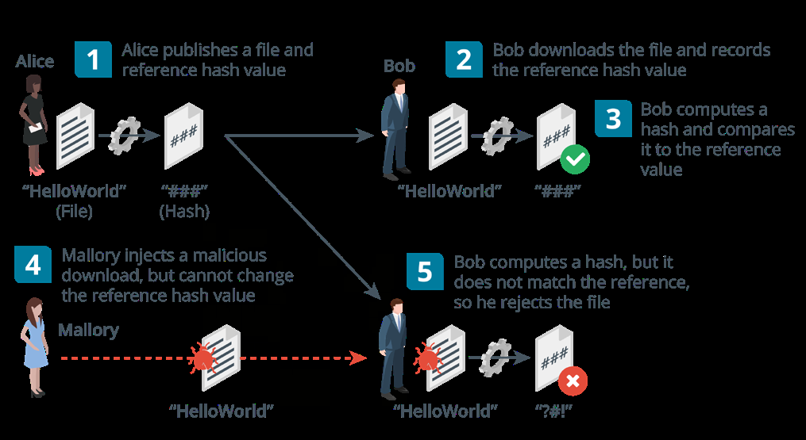
18
Hashing Algorithms
Secure Hash Algorithm (Sha) - Considered To Be The Strongest Algorithm With The
Most Popular Being The Sha-256 Which Produces A 256-Bit Digest.
Message Direct Algorithm #5 (Md5) - Produces A 128-Bit Digest
Birthday Attack - A Brute Force Attack Aimed At Exploiting Collisions In Hash Functions. Could Be Used For Forging A Digital Signature
3.2 Encryption
An encryption algorithm is a type of plaintext and ciphertext but their order is cryptographic process that encodes data changed according to some mechanism.
so that it can be recovered or decrypted. Consider the ciphertext “hloolelwrd”
The use of a key, with the encryption h l o o l cipher ensures that decryption can only be performed by authorized persons. e l w r d
A substitution cipher involves replacing The letters are simply written as columns units in the plaintext with different and the rows are concatenated.
ciphertext. e.g rot13 rotates each letter 13 symmetric encryption - here both places so a becomes n encryption and decryption are performed The ciphertext “uryyb jbeyq” means “hello by the same secret key and can be used world” for confidentiality. It is very fast and is used
for bulk encryption of large amounts of
In contrast to substitution ciphers, the units
data but can be vulnerable if the key is
in a transposition cipher stay the same in
stolen.
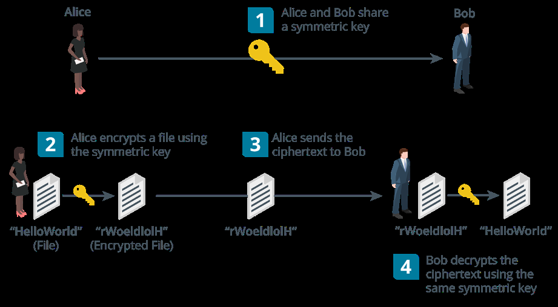
19
There are two types - Stream ciphers & block ciphers
Stream cipher - The plaintext is combined with a separate randomly generated message calculated from the key and an initialization vector (iv). each byte or bit of data is encrypted one at a time.
Block cipher - The plaintext is divided into equal-size blocks (usually 128-bit). if there is not enough data in the plaintext, it is padded to the correct size. e.g, a 1200-bit plaintext would be padded with an extra 80 bits to fit into 10 x 128-bit blocks.
Asymmetric Encryption - Here both encryption and decryption are performed by two different but related public and private keys in a key pair. Each key is capable of reversing the operation of its pair and they are linked in such a way as to make it impossible to derive one from the other.
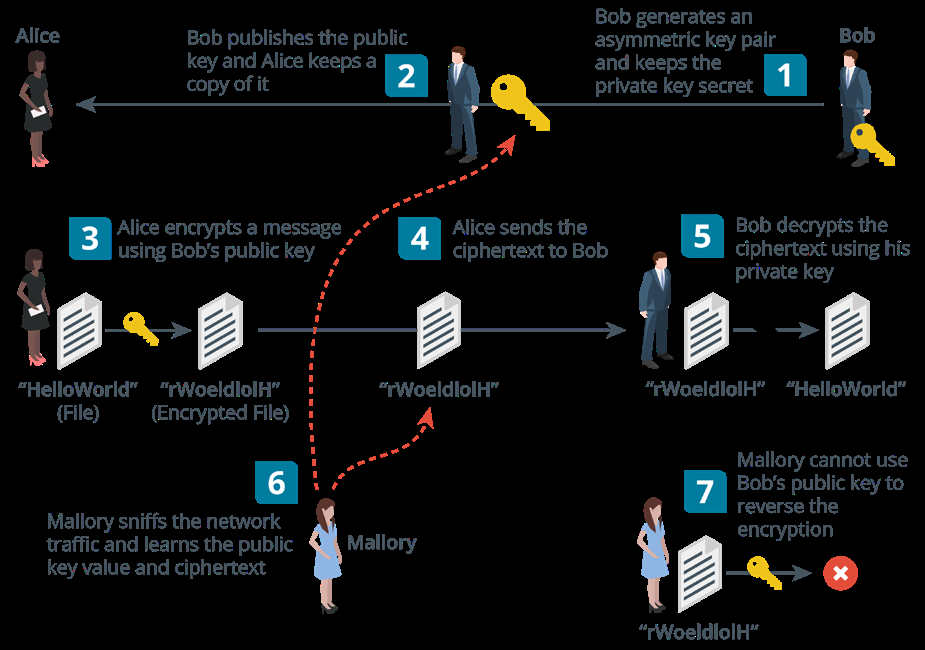
Can Be Used To Prove Identity As The Holder Of The Private Key Cannot Be Impersonated By Anyone Else.
The Major Drawback Of This Encryption Is That It Involves Substantial Computing Resources.
Mostly Used For Authentication And Non-Repudiation And For Key Agreement And Exchange.
Asymmetric Encryption Is Often Referred To As Public Key Cryptography And The Products Are Based On The Rsa Algorithm.
Ron Rivest, Adi Shamir And Leonard Adleman Published The Rsa Cipher In 1977.
20
3.3 Cryptographic Modes Of Operation & Cipher Suites
A Mode Of Operation Is A Means Of Using And Are Freely Available But How Can A Cipher Within A Product To Achieve A Anyone Trust The Identity Of The Person Security Goal Such As Confidentiality Or Or Server Issuing A Public Key?
Integrity. A Third Party Known As A Certificate Public Key Cryptography Can Authenticate Authority (Ca) Can Validate The Owner Of A Sender While Hashing Can Prove The Public Key By Issuing The Subject With
Integrity. A Certificate.
Both Can Be Combined To Authenticate The Process Of Issuing And Verifying A Sender And Prove The Integrity Of A Certificates Is Called Public Key Message And This Usage Is Called A Infrastructure (Pki)
Digital Signature. Cipher Suite - This Is The Combination Of Symmetric Encryption Can Encrypt And Ciphers Supported And Is Made Up Of
Decrypt Large Amounts Of Data But It’s Signature Algorithm - Used To Assert Difficult To Distribute The Secret Key The Identity Of The Server’s Public Key Securely. And Facilitate Authentication
Asymmetric (Pkc) Encryption Can Distribute Key Exchange/Agreement Algorithm The Key Easily But Cannot Be Used For - Used By The Client And Server To Large Amounts Of Data. Derive The Same Bulk Encryption Digital Certificates - Public Keys Are Used Symmetric Key.
3.4 Cryptographic Use Cases
Cryptography supporting authentication & non-repudiation - a single hash function, symmetric or asymmetric cipher is called a cryptographic primitive. a complete cryptographic system or product is likely to use multiple cryptographic primitives such as within a cipher suite.
Authentication & non-repudiation depend on the recipient not being able to encrypt the message or the recipient would be able to impersonate the sender. Basically the recipient must be able to use the cryptographic process to decrypt authentication and integrity data but not to encrypt it.
Cryptography supporting confidentiality - cryptography removes the need to store data in secure media as even if the ciphertext is stolen, the threat actor will not be able to understand or change what has been stolen.
Cryptography supporting integrity & resiliency - integrity is proved by hashing algorithms which allow two parties to derive the same checksum and show that a message or data has not been tampered with. Cryptography can be used to design highly resilient control systems and secure computer code.
21
A developer can make tampering more difficult through obfuscation which is the art of making a message difficult to understand. Cryptography is a very effective way of obfuscating code but it also means the computer might not be able to understand and execute the code.
3.5 Longevity, Salting , Stretching & Other Types Of
Cryptographic Technologies
Longevity -This Refers To The Measure Key. This Means The Attacker Will Have To Of Confidence That People Have In A Do Extra Processing For Each Possible Key Given Cipher. In Another Sense, It Is The Value Thus Make The Attack Even Slower.
Consideration Of How Long Data Must Be This Can Be Performed By Using A Kept Secure. Particular Software Library To Hash And Salting -Passwords Stored As Hashes Are Save Passwords When They Are Created. Vulnerable To Brute Force And Dictionary The Password-Based Key Derivation Attacks. A Password Hash Cannot Be Function 2 (Pbkdf2) Is Widely Used For Decrypted As They Are One-Way. However, This Purpose. An Attacker Can Generate Hashes To
Try And Find A Match For The Captured Homomorphic Encryption -This Is The
Password Hash Through A Brute Force Or Conversion Of Data Into Ciphertext That Can Be Analyzed And Worked With As If It Dictionary Attack. Were Still In Its Original Form.
A Brute Force Attack Will Run Through It Enables Complex Mathematical A Combination Of Letters, Numbers And Operations To Be Performed On Encrypted Symbols While A Dictionary Attack Creates Data Without Compromising The Hashes Of Common Words And Phrases. Encryption.
Both Attacks Can Be Slowed Down Blockchain -This is a concept in which an
expanding list of transactional records is
By Adding A Salt Value When secured using cryptography. Each record Creating The Hash. is referred to as a block and is run through
a hash function. The hash value of the
(Salt + Password) * Sha = Hash previous block in the chain is added to
The Salt Is Not Kept Secret Because Any the hash calculation of the next block and thus ensures that each successive block is System Verifying The Hash Must Know cryptographically linked. The Value Of The Salt But It’s Presence
Means That An Attacker Cannot Use Pre- Steganography -This is a technique for Computed Tables Of Hashes. obscuring the presence of a message
Key Stretching -This Takes A Key That’s such as hiding a message in a picture. the container document or file is called the Generated From A User Password Plus covertext. A Random Salt Value And Repeatedly
Converts It To A Longer And More Random
22
3.6 Certificates, Pkis, Ras & Csrs
Public & Private Key Usage
When you want others to send you confidential messages, you give them your public key to encrypt the message and then you decrypt the message with your private key.
When You Want To Authenticate Yourself To Others, You Create A Signature And Sign It Using Your Private Key To Encrypt It. You Give Others Your Public Key To Decrypt The Signature.
Certificate Authority - This Is The Entity Responsible For Issuing And Guaranteeing Certificates.
Pki Trust Models Include:
Single Ca - A Single Ca Issues Certificates To Users And The Users Trust Certificates By
That Ca Exclusively. If The Ca Is Compromised, The Entire Pki Collapses
Hierarchical (Intermediate Ca) - A Single Ca Called The Root Issues Certificates To
Several Intermediate Cas. The Intermediate Cas Issue Certificates To Subjects (Leaf
Or End Entities). Each Leaf Certificate Can Be Traced Back To The Root Ca Along The
Certification Path And This Is Referred To As A Certificate Chain Or Chain Of Trust. The
Root Is Still A Single Point Of Failure But It Can Be Taken Offline As Most Of The Regular
Ca Activities Are Handled By The Intermediate Ca Servers.
Online Versus Offline Cas - An online ca is one that is available to accept and process
certificate signing requests and management tasks. Because of the high risk posed by
a compromised root ca, a secure configuration
will involve making the root an offline ca
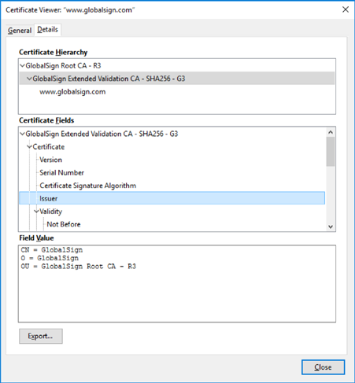
meaning it is disconnected from any network
and only brought back online to add or update
intermediate cas.
Registration authorities and CSRS -
registration is the process by which end users
create an account with the CA and become
authorized to request certificates.
When A Subject Wants To Obtain A Certificate,
It Completes A Certificate Signing Request (Csr)
And Submits It To The Ca.
The CA Reviews The Certificate And Checks
That The Information Is Valid. If The Request Is
Accepted, The CA Signs The Certificate And
Sends It To The Subject.
23
3.7 Digital Certificates
A Digital Certificate Is Essentially A Wrapper For A Subject’s Public Key. As Well As The Public Key, It Contains Information About The Subject And The Certificate’s Issuer.
Field Usage
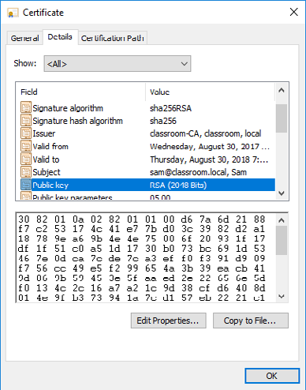
A number uniquely identifying the
Serial number certificate within the domain of its
CA.
The algorithm used by the CA to sign
Signature algorithm
the certificate.
Issuer The name of the CA.
Date and time during which the
Valid from/to
certificate is valid.
The name of the certificate holder,
expressed as a distinguished name
(DN). Within this, the common name
Subject (CN) part should usually match either
the fully qualified domain name
(FQDN) of the server or a user email
address.
Public key and algorithm used by the
Public key
certificate holder.
V3 certificates can be defined with
When Certificates Were First extended attributes, such as friendly Introduced, The Common Name email addresses, and intended key Extensions subject or issuer names, contact (Cn) Attribute Was Used To Identify usage. The Fqdn By Which The Server Is This extension field is the preferred Accessed. Subject alternative mechanism to identify the DNS
name (SAN) name or names by which a host is
The Subject Alternative Name identified. (San) Extension Field Is Structured
To Represent Different Types
Of Identifiers Including Domain
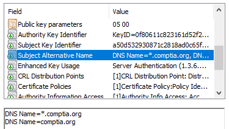
Names.
A Wildcard Domain Such As
*.Comptia.Org Means That The
Certificate Issued To The Parent
Domain Will Be Accepted As Valid
For All Subdomains.
24
Eku Field - Can Have The Following Other Certificate Types Include:
Values Machine/Computer Certificates
Server Authentication Email/User Certificates
Client Authentication Code Signing Certificates
Code Signing Root Certificate
Email Protection Self-Signed Certificates
Web Server Certificate Types Include:
Domain Validation (Dv) - Proves The Ownership Of A Particular Domain
Extended Validation (Ev) - Subjecting To A Process That Requires More Rigorous Checks
On The Subject’s Legal Identity And Control Over The Domain.
3.8 Key Management
This Refers To Operational Considerations For The Various Stages In A Key’s Life Cycle And Can Be Centralized Meaning One Admin Controls The Process Or Decentralized In Which Each User Is Responsible For His Or Her Keys.
Key Life Cycle
Key Generation Revocation
Certificate Generation Expiration And Renewal
Storage
If The Key Used To Decrypt Data Is Lost Or Damaged, Encrypted Data Cannot Be Recovered Unless A Backup Of The Key Exists. However Making Too Many Backups Can Make It More Difficult To Keep The Key Secure.
Escrow Means That Something Is Held Independently Which In Terms Of Key Management, Means A Third Party Is Trusted To Store The Key Securely.
25
3.9 Certificate Management
When You Are Renewing A Certificate, It Is Possible To Use The Existing Key Referred To Specifically As Key Renewal Or Generate A New Key In Which Case, The Certificate Is Rekeyed.
Certificates Are Issued With A Limited Duration Set By The Ca Policy For The Certificate Type E.G A Root Certificate Might Have A 10 Year Expiry Date While A Web Server Certificate Might Be Issued For 1 Year Only.
A Certificate May Be Revoked Or Suspended. A Revoked Certificate Is No Longer Valid And Cannot Be Reinstated While A Suspended Certificate Can Be Re-Enabled.
A Certificate May Be Revoked Or Suspended For A Variety Of Reasons Such As The Private Key Compromise, Business Closure Or A User Leaving The Company. These Reasons Are Codified Under
Unspecified
Key Compromise
Ca Compromise
Superseded
Cessation Of Operation
A Suspended Key Is Given The Code Certificate Hold
26
SECTION 4 -
IMPLEMENT IDENTITY AND
ACCESS MANAGEMENT
4.1 Identity Access Management
Covers The Authentication & Authorization Aspects Of A System And How Privileged Users Are Managed.
There Are Four Phases Involved In IAM IM Tools & Techniques
Identity - Supply Identification Information Identity Manager
Authenticate - Identity Information Is Verified Fraud Analytics
Authorize - Allows Actions Based On Verified Multi Factor Authentication
Identification
Audit - Keeps Track Of Actions Performed Am Tools & Techniques
With The Identification Single Sign On
Identity & Access Threats Behavior Analytics
Role Based Approach
Spoofing
Identity Theft
Keylogging
Escalation Of Privilege
Information Leakage
4.2 Authentication Factors, Design And Attributes
Authentication Factors
Something You Know - This Includes Passwords, Passphrases Or Pins. A Knowledge
Factor Is Also Used For Account Reset Mechanisms.
Something You Have - An Ownership Factor Means That The Account Holder
Possesses Something That No One Else Does Such As A Smart Card, Hardware Token
Or Smartphone.
27
Something You Are/Do - A Biometric Factor Uses Either Physiological Identifiers Like
Fingerprints Or Behavioral Identifiers Such As The Way Someone Walks And Talks.
Multi Factor Authentication - This Combines The Use Of More Than One Authentication Factor And Can Either Be 2factor Or 3 Factor Authentication.
Multifactor authentication requires a combination of different technologies. for example, requiring a pin along with a date of birth isn’t multifactor.
Authentication Attributes
Compared to the authentication factors, an authentication attribute is either a non-unique property or a factor that cannot be used independently.
Somewhere you are - This could be a geographic location measured using a device’s
location service or ip address. This isn’t used as a primary authentication factor but may
be used as a continuous authentication mechanism.
Something you can do - Behavioral characteristics such as the way you walk or hold
your smartphone can be used to identify you to a considerable degree of activity.
Something you exhibit - This also refers to a behavioral-based authentication and
authorization with specific emphasis on personality traits such as the way you use
smartphone apps or web search engines.
Someone you know - This uses a web of trust model where new users are vouched for
by existing users.
4.3 Biometric Authentication
The first step is enrollment and the chosen biometric is scanned by a biometric reader and converted to binary information. The biometric template is kept in the authentication server database and when a user wants to access a resource, they are scanned and the scan is compared to the template to determine if access will be granted or denied.
False rejection rate (FRR) - Where a legitimate user is not recognized. also referred to as
a type 1 error or false non-match rate (FNMR).
False acceptance rate (FAR) - Where an interloper is accepted. also referred to as type 2
error or false match rate (FMR)
Crossover error rate (CER) - The point at which FRR and FAR meet. the lower the CER,
the more efficient and reliable the technology.
Fingerprint & facial recognition - Fingerprint recognition is the most widely used as it’s inexpensive and non-intrusive. facial recognition records multiple factors about the size and shape of the face
28
Facial Recognition Voice Recognition - Relatively Cheap
But Subject To Impersonation And
Retinal Scan - An Infrared Light Is Background Noise
Shone Into The Eye To Identify The
Pattern Of Blood Vessels. It Is Very Gait Analysis - Human Movement
Accurate, Secure But Also Quite Signature Recognition - Records The
Expensive User Applying Their Signature (Stroke,
Speed And Pressure Of The Stylus) Iris Scan - Matches Patterns On The
Surface Of The Eye Using Near-Infrared Typing - Matches The Speed And
Imaging And Is Less Intrusive Than Pattern Of A User’s Input Of A
Retinal Scan. Passphrase
Behavioral Technology - A Template Is Continuous Authentication Verifies That Created By Analyzing A Behavior Such As The User Who Logged On Is Still Operating Typing Or Walking. The Device.
4.4 Password Concepts
Password Length -Enforces a minimum Aging policies should not be enforced. length for passwords. Users should be able to select if and when
a password should be changed
Password Complexity -Enforces password complexity rules Password hints should not be used.
Password Aging -Forces the user to select Password Managers - These are used a new password after a set period to mitigate poor credential management
practices that are hard to control.
Password Reuse and History -Prevents the selection of a password that has been The main risks involved are selection of used already. a weak master password, compromise of
Under the most recent NIST guidelines: the vendor’s cloud storage or systems and impersonation attacks designed to trick Complexity rules should not be enforced the manager into filling a password to a and the only restriction should be to block spoofed site. common passwords.
29
4.5 Authorization Solutions - Part 1
An Important Consideration When Designing A Security System Is To Determine How Users Receive Rights Or Permissions.
The Different Models Are Referred To As Access Control Schemes.
Discretionary Access Control (Dac) - It Is Very Flexible But Also The Easiest To Compromise As It’s Vulnerable To Insider Threats And Abuse Of Compromised Accounts.
This Is Based On The Primacy Of The Resource Owner And This Means The Owner Has Full Control Over The Resource And Can Decide Who To Grant Rights To.
Role-Based Access Control (Rbac) - Rbac Can Be Partially Implemented Through The Use Of Security Group Accounts.
This Adds An Extra Degree Of Centralized Control To The Dac Model Where Users Are Not Granted Rights Explicitly (Assigned Directly) But Rather Implicitly (Through Being Assigned A Role)
File System Permissions (Linux) - In Linux, There Are Three Basic Permissions:
Read(R) - The Ability To Access And View The File
Write(W) - The Ability To Modify The File
Execute(X) - The Ability To Run A Script Or Program Or Perform A Task On That Directory.
These Permissions Can Be Applied In The Context Of The Owner User(U), A Group Account(G) And All Other Users/World(O).
D Rwx R-X R-X Home
The String Above Shows That For The Directory(D), The Owner Has Read, Write And Execute Permissions While The Group Context And Others Have Read And Execute Permissions
The Chmod Command Is Used To Modify Permissions And Can Be Used Either In Symbolic Or Absolute Mode.
In Symbolic Mode, The Command Works As Follows:
Chmod G+W, O-X Home
The Effect Of This Command Is To Append Write Permission To The Group Context And Remove Execute Permission From The Other Context.
By Contrast, The Command Can Also Be Used To Replace Existing Permissions.
Chmod U=Rwx, G=Rx, O=Rx Home
30
D rwx r-x r-x home
In absolute mode, permissions are assigned using octal notation where r=4, w=2 and x=1
Chmod 755 home
Mandatory access control (mac) - this is based on the idea of security clearance levels (labels) instead of acls. In a hierarchical one, subjects are only permitted to access objects at their own clearance level or below.
Attribute-based access control (abac) - this is the most fine-grained type of access control mode and it is capable of making access decisions based on a combination of subject and object attributes plus any system-wide attributes.
This system can monitor the number of events or alerts associated with a user account or track resources to ensure they are consistent in terms of timing of requests.
Rule-based access control - this is a term that can refer to any sort of access control model where access control policies are determined by system-enforced rules rather than system users.
As such rbac, abac and mac are all examples of rule-based (or non-discretionary) access control.
4.6 Authorization Solutions - Part 2
Directory services - Directory services are the principal means of providing privilege management and authorization on an enterprise network as well as storing information about users, security groups and services.
The types of attributes, what information they contain and the way object types are defined through attributes is described by the directory schema.
Cn - common name ou - organizational unit c - country dc - domain component
E.G the distinguished name of a web server operated by widget in the uk might be:
Cn = widgetweb, ou = marketing, o = widget, c= uk, dc = widget, dc = foo
Federation - Federation means that the company trusts accounts created and managed by a different network.
This is the notion that a network needs to be accessible to more than just a well-defined group of employees. In business, a company might need to make parts of its network open to partners, suppliers and customers.
Cloud versus on-premises requirements - Where a company needs to make use of cloud services or share resources with business partner networks, authorization and authentication design comes with more constraints and additional requirements.
31
Oauth and openid connect - Many public clouds use application programming interfaces (apis) based on representational state transfer (rest) rather than soap.
Authentication and authorization for a restful api is often implemented using the open authorization (oauth) protocol. Oauth is designed to facilitate sharing of information within a user profile between sites.
4.7 Account Attributes & Access Policies
A user account is defined by a unique security identifier (sid), a name and a credential. Each account is associated with a profile which can be defined with custom identity attributes describing the user, such as full name, email address, contact number etc.
Each account can be assigned permissions over files and other network resources. These permissions might be assigned directly to the account or inherited through membership of a security group or role. On a windows active directory network, access policies can be configured via group policy objects (gpos)
32
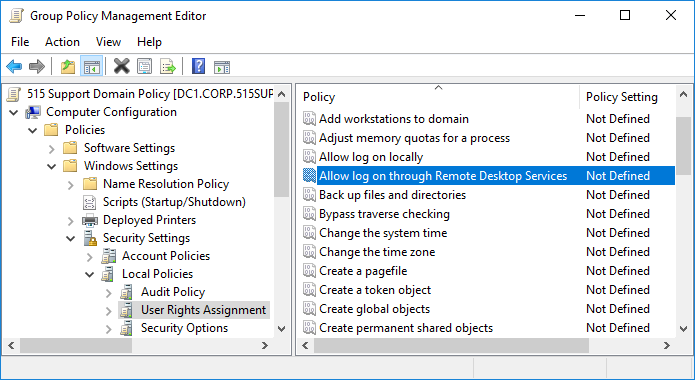
Location-Based Policies - A User Or Device Can Have A Logical Network Location Identified By An Ip Address Which Can Be Used As An Account Restriction Mechanism.
The Geographical Location Of A User Or Device Can Be Calculated Using A Geographical Mechanism.
Geofencing Refers To Accepting Or Rejecting Access Requests Based On Location.
Time-Based Restrictions - There Are Three Main Types Of Time-Based Policies.
A Time Of Day Policy Established Authorized Logon Hours For An Account
A Time-Based Login Policy Established The Maximum Amount Of Time An Account May
Be Logged In For
An Impossible Travel Time/Risky Login Policy Tracks The Location Of Logon Events Over
Time.
Account & Usage Audits - Accounting And Auditing Processes Are Used To Detect Whether An Account Has Been Compromised Or Is Being Misused. Usage Auditing Means Configuring The Security Log To Record Key Indicators And Then Reviewing The Logs For Suspicious Activity.
Account Lockout & Disablement - If Account Misuse Is Detected Or Suspected, The Account Can Be Manually Disabled By Setting An Account Property. An Account Lockout Means That Login Is Prevented For A Period
33
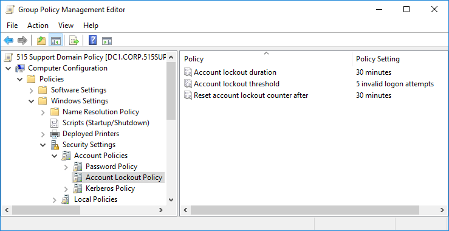
4.8 Privileged Access Management
A privileged account is one that can make significant configuration changes to a host, such as installing software or disabling a firewall or other security system. Privileged accounts also have the right to manage network appliances, application servers, and databases.
Privileged Access Management (PAM) refers to policies, procedures and technical controls to prevent compromise of privileged accounts.
It is a good idea to restrict the number of administrative accounts as much as possible. The more accounts there are, the more likely it is that one of them will be compromised. On the other hand, you do not want administrators to share accounts or to use default accounts, as that compromises accountability.
To protect privileged account credentials, it is important not to sign in on untrusted workstations. A secure administrative workstation (SAW) is a computer with a very low attack surface running the minimum possible apps.
Traditional administrator accounts have standing permissions. Just-in-time (JIT) permissions means that an account’s elevated privileges are not assigned at log-in. Instead, the permissions must be explicitly requested and are only granted for a limited period. This is referred to as zero standing privileges (ZSP).
There are three main models for implementing this
Temporary Elevation - Means that the account gains administrative rights for a limited
period. The User Account Control (UAC) feature of Windows and the sudo command in
Linux use this concept.
Password Vaulting/Brokering - The privileged account must be “checked out” from a
repository and is made available for a limited amount of time. The administrator must log
a justification for using the privileges.
Ephemeral Credentials - Means the system generates or enables an account to use to
perform the administrative task and then destroys or disables it once the task has been
performed. Temporary or ephemeral membership of security groups or roles can serve a
similar purpose.
34
4.9 Local, Network & Remote Authentication
This involves a complex architecture of components but the following three scenarios are typical:
Windows Authentication
Windows local sign-in -- the Local Security Authority (LSA) compares the submitted
credential to a hash stored in the Security Accounts Manager (SAM) database.
Windows network sign-in -- the LSA can pass the credentials for authentication to a
network service either Kerberos or NT LAN Manager (NTLM) authentication.
Remote sign-in -- if the user’s device is not connected to the local network,
authentication can take place over some type of virtual private network (VPN) or web
portal.
Linux Authentication -Local user account names are stored in /etc/passwd. When a user logs in to a local interactive shell, the password is checked against a hash stored in /etc/ shadow.
A pluggable authentication module (PAM) is a package for enabling different authentication providers.
Single Sign-On (SSO) - This system allows the user to authenticate once to a local device and be authenticated to compatible application servers without having to enter credentials again.
In Windows, SSO is provided by the Kerberos framework.
4.10 Kerberos Authentication & Authorization
Kerberos is a single sign-on network authentication and authorization protocol used on many networks notably as implemented by Microsoft’s Active Directory (AD) service.
Kerberos Authentication - This protocol is made up of 3 parts
KDC (Authentication Service)
Principal
Application Server
35
SECTION 5 -
SECURE ENTERPRISE
NETWORK ARCHITECTURE
5.1 Secure Network Designs
Switches - forward frames between nodes in a cabled network.
They work at layer 2 of the osi model and make forwarding messages based on the hardware or media access control (mac) address of attached nodes.
They can establish network segments that either map directly to the underlying cabling or to logical segments created in the switch configuration as virtual lans (vlans)
Wireless access points - provide a bridge between a cabled network and wireless clients or stations. They also work at layer 2 of the osi model.
Load balancers - distribute traffic between network segments or servers to optimize performance. They work at layer 4 of the osi model or higher
Routers - forward packets around an internetwork, making forward decisions based on ip addresses. They work at layer 3 of the osi model. They can apply logical ip subnet addresses to segments within a network.
Firewalls - they apply an access control list (acl) to filter traffic passing in or out of a network segment. They can work at layer 3 of the osi model or higher.
Domain name system (dns) servers - host name records and perform name resolution to allow applications and users to address hosts and services using fully qualified domain names (fqdns) rather than ip addresses.
Dns works at layer 7 of the osi model.
36
5.2 Network Segmentation, Topology & Dmzs
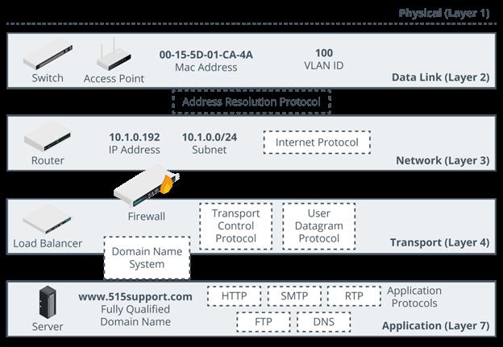
A Network Segment Is One Where All The Hosts Attached To The Segment Can Use Local (Layer 2) Forwarding To Communicate Freely With One Another.
Segregation Means That The Hosts In One Segment Are Restricted In The Way They Communicate With Hosts In Other Segments.
Freely Means That No Network Appliances Or Policies Are Preventing Communications.
A Network Topology Is A Description Of How A Computer Network Is Physically Or Logically Organized.
The Main Building Block Of A Topology Is A Zone Which Is An Area Of The Network Where The Security Configuration Is The Same For All Hosts Within It.
Zones Can Be Segregated With Vlans While The Traffic Between Them Can Be Controlled Using A Security Device, Typically A Firewall.
37
Network Zones
Intranet (Private Network) - This Is A Network Of Trusted Hosts Owned And Controlled By
The Organization.
Extranet - This Is A Network Of Semi-Trusted Hosts Typically Representing Business
Parties, Suppliers Or Customers.
Internet/Guest - This Is A Zone Permitting Anonymous Access By Untrusted Hosts Over
The Internet.
Demilitarized Zones (Dmzs) - The Most Important Distinction Between Different Security Zones Is Whether A Host Is Internet-Facing.
An Internet-Facing Host Accepts Inbound Connections From And Makes Connections To Hosts On The Internet.
Such Hosts Are Placed In A Dmz (Perimeter Or Edge Network). In A Dmz, External Clients Are Allowed To Access Data On Private Systems Such As Web Servers Without Compromising The Security Of The Internal Network As A Whole.
Triple-Homed Firewall - A Dmz Can Also Be Established Using One Router/Firewall Appliance With Three Network Interfaces, Referred To As Triple-Homed.
One Interface Is The Dmz
The Second Is The Public One
The Third Connects To The Lan
East-West Traffic - Traffic That Goes To And From A Data Center Is Referred To As North-South. This Traffic Represents Clients Outside The Data Center Making Requests.
However In Data Centers That Support Cloud Services, Most Traffic Is Actually Between Servers Within That Data Center And This Traffic Is Referred To As East-West Traffic.
Zero Trust - This Is Based On The Idea That Perimeter Security Is Unlikely To Be Robust Enough. As Such In A Zero Trust Model, Continuous Authentication And Conditional Access Are Used To Mitigate Threats.
Zero Trust Also Uses A Technique Called Microsegmentation. This Is A Security Process That Is Capable Of Applying Policies To A Single Node As Though It Was In A Zone Of Its Own.
5.3 Device Placement & Attributes
The process of choosing the type and placement of security controls to ensure the goals of the CIA triad and compliance with any framework requirements.
The selection of effective controls is governed by the principle of defense in depth.
38
Preventive Controls - Are often placed at the border of a network segment or zone.
Preventive controls such as firewalls enforce security policies on traffic entering and
exiting the segment, ensuring confidentiality and integrity. A load balancer control
ensures high availability for access to the zone.
Detective Controls - Might be placed within the perimeter to monitor traffic exchanged
between hosts within the segment. This provides alerting of malicious traffic that has
evaded perimeter controls.
Preventive, Detective & Corrective Controls - Might be installed on hosts as a layer of
endpoint protection in addition to the network infrastructure controls.
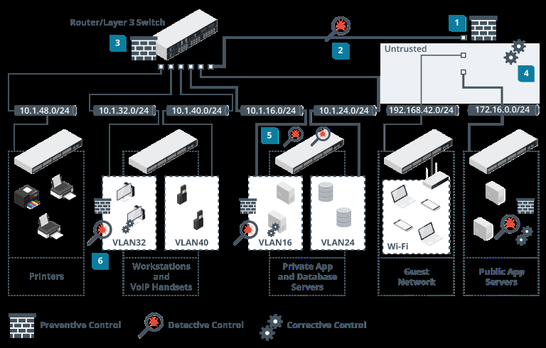
Attributes determine the precise way in which a device can be placed within the network topology
A passive security control is one that does not require any sort of client or agent configuration or host data transfer to operate.
An active security control that performs scanning must be configured with credentials and access permissions and exchange data with target hosts. An active control that performs filtering requires hosts to be explicitly configured to use the control. This might mean installing agent software on the host, or configuring network settings to use the control as a gateway.
39
Inline vs Monitor
A device that is deployed inline becomes part of the cable path. No changes in the IP or routing topology are required. The device’s interfaces are not configured with MAC or IP addresses.
SPAN (Switched Port Analyzer)/Mirror Port - This means that the sensor is attached to a specially configured monitor port on a switch that receives copies of frames addressed to nominated access ports (or all the other ports). This method is not completely reliable. Frames with errors will not be mirrored and frames may be dropped under heavy load
Test Access Point (TAP) - This is a box with ports for incoming and outgoing network cabling and an inductor or optical splitter that physically copies the signal from the cabling to a monitor port. Unlike SPAN every single frame is copied or received.
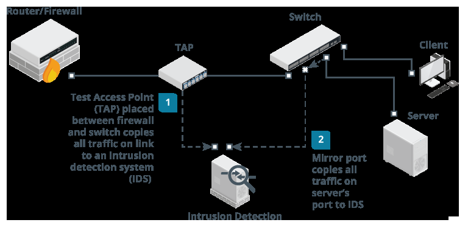
Fail-Open versus Fail-Closed
A security device could enter a failure state for a number of reasons. There could be a power or hardware fault, an irreconcilable policy violation, or a configuration error. Hardware failure can be caused by power surges, overheating, and physical damage.
Software failure can occur because of bugs, security vulnerabilities, and compatibility issues. Configuration issues can be caused by human errors such as inattention, fatigue, or lack of training.
When a device fails, it can be configured to fail-open or fail-closed
Fail-open means that network or host access is preserved. This mode prioritizes
availability over confidentiality and integrity.
Fail-closed means that access is blocked. This mode prioritizes confidentiality and
integrity over availability.
40
5.4 Device Placement & Attributes
Man-In-The-Middle & Layer 2 Attacks - Most Attacks At Layer 1 And 2 Of The Osi Model Are Typically Focused On Information Gathering Through Network Mapping And Eavesdropping.
A MITM can also be performed on this layer due to the lack of security.
MAC cloning or MACaddress spoofing - Changes the hardware address of an adapter to an arbitrary one either by overriding the original address in software via os commands or with the use of packet crafting software.
Arp Poisoning Attack - Arp poisoning attack uses a packet crafter such as ettercap to broadcast unsolicited arp reply packets.
Because arp has no security mechanism, the receiving devices trust this communication and update their mac:ip address cache table with the spoofed address.
MAC flooding attacks - Where arp poisoning is directed at hosts, mac flooding is used to attack a switch.
The idea here is to exhaust the memory used to store the switch’s mac address table which is used by the switch to determine which port to use to forward unicast traffic to its correct destination.
Overwhelming the table can cause the switch to stop trying to apply mac-based forwarding and simply flood unicast traffic out of all ports.
Router / Switch Security arriving on access ports to ensure that
Physical Port Security - Access to address. with dhcp snooping, only dhcp a host is not trying to spoof its mac
physical switch ports and hardware messages from ports configured as should be restricted to authorized trusted are allowed. staff by using a secure server room or
lockable hardware cabinets. Network Access Control - Nac products
Mac Limiting/Filtering - Configuring to allow admins to devise policies or can extend the scope of authentication mac filtering on a switch means defining profiles describing a minimum security which mac addresses are allowed to configuration that devices must meet connect to a particular port by creating to be granted network access. This is
a list of valid mac addresses. mac called a health policy. limiting involves specifying a limit to the
number of permitted addresses that can Route Security - A successful attack
connect to a port. against route security enables the
Dhcp Snooping - Dynamic host intended destination. routes between attacker to redirect traffic from its configuration protocol is one that allows networks and subnets can be a server to assign an ip address to a configured manually, but most routers client when it connects to a network. automatically discover routes by
dhcp snooping inspects this traffic communicating with each other.
41
routing is subject to numerous vulnerabilities
Spoofed Routing Information (Route Injection) - T raffic is misdirected to a monitoring
port (sniffing) or continuously looped around the network causing dos.
Source Routing - This uses an option in the ip header to pre-determine the route a
packet will take through the network. This can be used to spoof ip addresses and bypass
router/firewall filters.
Software Exploits In The Underlying Operating System - Cisco devices typically use the
internetwork operating system (ios) which suffer from fewer exploitable vulnerabilities
than full network operating systems.
5.5 Routing & Switching Protocols
Layer 3 Forwarding Or Routing Occurs Between Both Logically And Physically Defined Networks. A Single Network Divided Into Multiple Logical Broadcast Domains Is Said To Be Subnetted.
At Layer 3, Nodes Are Identified By Ip Addresses.
Address Resolution Protocol (Arp) - This Maps A Mac Address To An Ip Address.
Normally A Device That Needs To Send A Packet To An Ip Address But Does Not Know The Receiving Device’s Mac Address Broadcasts Will Broadcast An Arp Request Packet And The Device With The Matching Ip Responds With An Arp Reply.
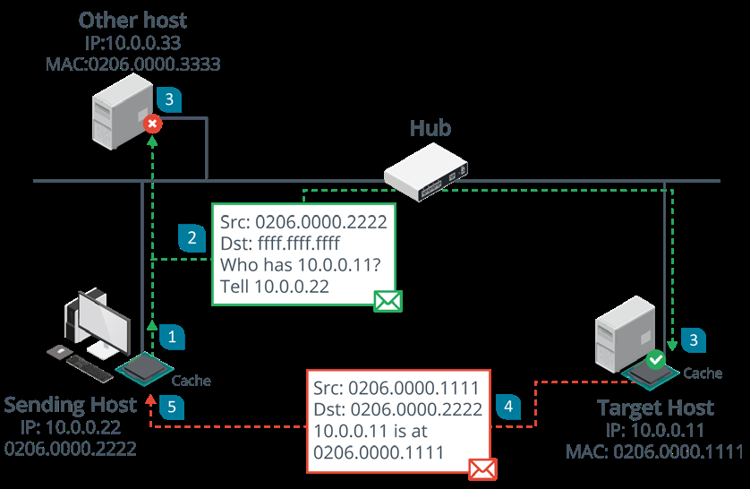
42
Internet Protocol (Ip)
This Provides The Addressing Mechanism For Logical Networks And Subnets.
172.16.1.101/16
The /16 Prefix Indicates That The First Half Of The Address (172.16.0.0) Is The Network Id While The Remainder Uniquely Identifies A Host On That Network. Networks Also Use 128-Bit Ipv6 Addressing.
2001:Db8::Abc:0:Def0:1234 Some Common Routing Protocols Include
The First 64-Bits Contain Network Border Gateway Protocol (Bgp)
Information While The Last Are Fixed As The Open Shortest Path First (Ospf) Host’s Interface Id.
A Route To A Network Can Be Configured Protocol (Eigrp) Enhanced Interior Gateway Routing Statically But Most Networks Use Routing
Protocols To Transmit New And Updated Routing Information Protocol (Rip) Routes Between Routers.
5.6 Using Secure Protocols
Secure protocols have places in many parts of your network and infrastructure. Security professionals need to be able to recommend the right protocol for each of the following scenarios:
Voice and video rely on a number of common protocols. Videoconferencing tools often
rely on HTTPS, but secure versions of the Session Initiation Protocol (SIP) and the Real-
time Transport Protocol (RTP) exist in the form of SIPS and SRTP, which are also used to
ensure that communications traffic remains secure.
A secure version of the Network Time Protocol (NTP) exists and is called NTS, but NTS
has not been widely adopted. Like many other protocols you will learn about in this
chapter, NTS relies on TLS. Unlike other protocols, NTS does not protect the time data.
Instead, it focuses on authentication to make sure that the time information is from a
trusted server and has not been changed in transit.
Email and web traffic relies on a number of secure options, including HTTPS, IMAPS,
POPS, and security protocols like Domain-based Message Authentication Reporting
and Conformance (DMARC), DomainKeys Identified Mail (DKIM), and Sender Policy
Framework (SPF) as covered earlier in this chapter.
File Transfer Protocol (FTP) has largely been replaced by a combination of HTTPS file
transfers and SFTP or FTPS, depending on organizational preferences and needs.
Directory services like LDAP can be moved to LDAPS, a secure version of LDAP.
43
Remote access technologies—including shell access, which was once accomplished
via telnet and is now almost exclusively done via SSH—can also be secured.
Microsoft’s RDP is encrypted by default, but other remote access tools may use
other protocols, including HTTPS, to ensure that their traffic is not exposed.
Domain name resolution remains a security challenge, with multiple efforts over
time that have had limited impact on DNS protocol security, including DNSSEC and
DNS reputation lists.
Routing and switching protocol security can be complex, with protocols like Border
Gateway Protocol (BGP) lacking built-in security features. Therefore, attacks such
as BGP hijacking attacks and other routing attacks remain possible. Organizations
cannot rely on a secure protocol in many cases and need to design around this lack.
Network address allocation using DHCP does not offer a secure protocol, and
network protection against DHCP attacks relies on detection and response rather
than a secure protocol.
Subscription services such as cloud tools and similar services frequently leverage
HTTPS but may also provide other secure protocols for their specific use cases.
The wide variety of possible subscriptions and types of services means that these
services must be assessed individually with an architecture and design review, as
well as data flow reviews all being part of best practices to secure subscription
service traffic if options are available.
5.7 Attack Surface
The network attack surface refers to all the points at which a threat actor could gain access to hosts and services.
Using the OSI model we can analyze the potential attack surface:
Layer 1/2 - Allows the attacker to connect to wall ports or wireless networks and
communicate with hosts within the same broadcast domain
Layer 3 - Allows the attacker to obtain a valid network address possibly by spoofing and
communicate with hosts in other zones
Layer 4/7 - Allows the attacker to establish connections to TCP or UDP ports and
communicate with application layer protocols and services.
Each layer requires its own type of security controls to prevent, detect, and correct attacks. Provisioning multiple control categories and functions to enforce multiple layers of protection is referred to as defense in depth.
Security controls deployed to the network perimeter are designed to prevent external hosts from launching attacks at any network layer. The division of the private network into segregated zones is designed to mitigate risks from internal hosts that have either been compromised or that have been connected without authorization.
44
Typical weaknesses in a network include:
Single points of failure
Complex dependencies
Availability over confidentiality and integrity
Lack of documentation
Over dependence on perimeter security
5.8 Firewalls
Packet Filtering Firewalls - These are the earliest type of firewalls and are configured by specifying a group of rules called an access control list (acl).
Each rule defines a specific type of data packet and the appropriate action to take when a packet matches the rule. an action can either be to deny or to accept the packet.
This firewall can inspect the headers of ip packets meaning that the rules can be based on the information found in those headers.in certain cases, the firewall can control only inbound or both inbound and outbound traffic and this is often referred to as ingress and egress traffic or filtering.
A basic packet filtering firewall is stateless meaning that it does not preserve any information about network sessions. The least processing effort is required for this but it can be vulnerable to attacks that are spread over a sequence of packets.
Stateful Inspection Firewalls - This type of firewall can track information about the session established between two hosts and the session data is stored in a state table.
When a packet arrives, the firewall checks it to confirm that it belongs to an existing connection and if it does then the firewall would allow the traffic to pass unmonitored to conserve processing effort.
Stateful inspection can occur at two layers: transport and application.
Transport Layer (Osi Layer 4) - Here, the firewall examines the tcp three-way handshake to distinguish new from established connections.
syn > syn/ack > ack
Any deviations from this sequence can be dropped as malicious flooding or session hijacking attempts.
Application Layer (Osi Layer 7) - This type of firewall can inspect the contents of packets at the application layer and one key feature is to verify the application protocol matches the port e.g http web traffic will use port 80.
45
Ip Tables -Iptables is a command on linux that allows admins to edit the rules enforced by the linux kernel firewall.
Iptables works with chains which apply to the different types of traffic such as the input chain for traffic destined for the local host. Each chain has a default policy set to drop or allow traffic that does not match a rule.
The rules in this example will drop any traffic from the specific host 10.1.0.192 and allow icmp echo requests (pings), dns and http/https traffic either from the local subnet (10.1.0.0/24) or from any network (0.0.0.0/0)
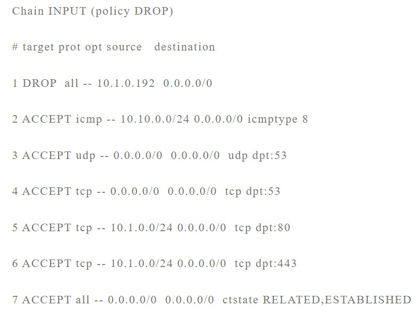
46
5.9 Firewall Implementation
Firewall Appliances - This Is A Stand-Alone Firewall Deployed To Monitor Traffic Passing Into And Out Of A Network Zone. It Can Be Deployed In Two Ways:
Routed (Layer 3) - The Firewall Performs Forwarding Between Subnets
Bridged (Layer 2) - The Firewall Inspects Traffic Between Two Nodes Such As A Router
And A Switch.
Application-Based Firewalls
Host-Based (Personal) - Implemented As A Software Application Running On A Single
Host Designed To Protect The Host Only.
Application Firewall - Software Designed To Run On A Server To Protect A Particular
Application Only
Network Operating System (Nos) Firewall - A Software Based Firewall Running Under A
Network Server Os Such As Windows Or Linux.
Proxies And Gateways - A Firewall That Performs Application Layer Filtering Is Likely To Be Implemented As A Proxy.
Proxy Servers Can Either Be Non-Transparent Or Transparent.
Non-Transparent Means The Client Must Be Configured With The Proxy Server Address
And Port Number To Use It
Transparent (Forced Or Intercepting) Intercepts Client Traffic Without The Client Having
To Be Reconfigured
Reverse Proxy Servers - These Provide For Protocol-Specific Inbound Traffic.
A Reverse Proxy Can Be Deployed On The Network Edge And Configured To Listen For Client Requests From A Public Network
5.10 Remote Access Architecture
Most Remote Access Is Implemented As A Virtual Private Network (Vpn) Running Over The Internet But It Can Be More Difficult To Ensure The Security Of Remote Workstations And Servers Than Those On The Lan. A Vpn Can Also Be Deployed In A Site-To-Site Model To Connect Two Or More Private Networks And Is Typically Configured To Operate Automatically
47
Openvpn - This Is An Open Source Example Of A Tls Vpn. Openvpn Can Work In Tap (Bridged) Mode To Tunnel Layer 2 Frames Or In Tun (Routed) Mode To Forward Ip Packets.
Another Option Is Microsoft’s Secure Sockets Tunneling Protocol (Sstp) Which Works By Tunneling Point-To-Point Protocol (Ppp) Layer 2 Frames Over A Tls Session.
Internet Protocol Security (Ipsec) - Tls Is Applied At The Application Level Either By Using A Separate Secure Port Or By Using Commands In The Application Protocol To Negotiate A Secure Connection.
Ipsec Operates At The Network Layer (Layer 3) So It Can Operate Without Having To Configure Specific Application Support.
Authentication Header (Ah) - This Performs A Cryptographic Hash On The Whole Packet Including The Ip Header Plus A Shared Secret Key And Adds This Hmac In Its Header As Integrity Check Value (Icv)
The Recipient Performs The Same Function On The Packet And Key And Should Derive The Same Value To Confirm That The Packet Has Not Been Modified.
Encapsulation Security Payload (Esp) - This Provides Confidentiality And/Or Authentication And Integrity. It Can Be Used To Encrypt The Packet Rather Than Simply Calculating An Hmac.
Esp Attaches Three Fields To The Packet: A Header, A Trailer (Providing Padding For The Cryptographic Function) And An Icv.
Ipsec Transport And Tunnel Modes - Ipsec Can Be Used In Two Modes:
Transport Mode - This Mode Is Used To Secure Communications Between Hosts On A
Private Network. Here The Ip Header For Each Packet Is Not Encrypted, Just The Payload
Data. If Ah Is Used In This Mode, It Can Provide Integrity For The Ip Header.
Ip Header AH ESP TCP/UDP Payload Trailer
ICV
Tunnel Mode - This Mode Is Used For Communications Between Vpn Gateways Across
An Unsecure Network And Is Also Referred To As Router Implementation. With Esp, The
Whole Ip Packet (Header And Payload) Is Encrypted And Encapsulated As A Datagram
With A New Ip Header.
NEW Ip ESP IP Header TCP/UDP Payload Trailer ICV Header
48
Internet Key Exchange (Ike) - Ipsec’s Encryption And Hashing Functions Depend On A Shared Secret. The Secret Must Be Communicated To Both Hosts And The Hosts Must Confirm One Another’s Identity (Mutual Authentication) Otherwise The Connection Is Vulnerable To Mitm And Spoofing Attacks. The Ike Protocol Handles Authentication And Key Exchange Referred To As Security Associations (Sa).
Ike Negotiations Take Place Over Two Phases:
Phase 1 Establishes The Identity Of The Two Hosts And Performs Key Agreement Using The Dh Algorithm To Create A Secure Channel. Digital Certificates And Pre-Shared Key Are Used For Authenticating Hosts.
Phase 2 Uses The Secure Channel Created In Phase 1 To Establish Which Ciphers And Key Sizes Will Be Used With Ah And/Or Esp In The Ipsec Session.
Vpn Client Configuration - To Configure A Vpn Client, You May Need To Install The Client Software If The Vpn Type Is Not Natively Supported By The Os.
Always-On Vpn - This Means That The Computer Establishes The Vpn Whenever An Internet Connection Over A Trusted Network Is Detected, Using The User’s Cached Credentials To Authenticate.
When A Client Connected To A Remote Access Vpn Tries To Access Other Sites On The Internet, There Are Two Ways To Manage The Connection:
Split Tunnel - The Client Accesses The Internet Directly Using Its “Native” Ip Configuration And Dns Servers.
Full Tunnel - Internet Access Is Mediated By The Corporate Network, Which Will Alter The Client’s Ip Address And Dns Servers And May Use A Proxy.
Full Tunnel Offers Better Security But The Network Address Translations And Dns Operations Required May Cause Problems With Some Websites Especially Cloud Services.
Out-Of-Band Management - Remote Management Methods Can Be Described As Either In-Band Or Out-Of-Band (Oob).
An In-Band Management Link Is One That Shares Traffic With Other Communications On The “Production” Network While A Serial Console Or Modem Port On A Router Is A Physically Out-Of-Band Management Method.
Secure Shell - This Is The Principal Means Of Obtaining Secure Remote Access To A Command Line Terminal. Mostly Used For Remote Administration And Secure File Transfer (Sftp).
Ssh Servers Are Identified By A Public/Private Key Pair (The Host Key).
49
SECTION 6 -
SECURE CLOUD NETWORK
ARCHITECTURE
6.1 Cloud Deployment Models
Public (multi-tenant) - A service offered over the internet by cloud service providers (csps) to cloud consumers
Hosted Private - Hosted by a third party for the exclusive use of an organization. Better performance but more expensive than public.
Private - Cloud infrastructure that is completely private and owned by the organization. Geared more towards banks and governmental services where security and privacy is of utmost importance.
Community - Several organizations share the costs of either a hosted private or fully private cloud.
Cloud Service Models - Cloud services can also be differentiated on the level of complexity and pre-configuration provided (sometimes referred to as anything as a service xaas)
Most common implementations are infrastructure, software and platform.
Infrastructure As A Service (IAAS) - It resources (servers, load balancers and san) are provided here. Examples include amazon elastic compute cloud, oracle cloud and microsoft azure virtual machines.
Software As A Service (SAAS) - Provisioning of software applications and can be purchased on a pay-as-you-go or lease arrangement. Examples are microsoft 365, salesforce and adobe creative cloud.
Platform As A Service (PAAS) - Provides resources somewhere between saas and iaas. A typical paas solution would provide servers and storage network infrastructure and also a web-application or database platform on top.
Examples include oracle database, microsoft azure sql database and google app engine.
50
Security As A Service
Consultants - Can Be Used For Framework Analysis Or For More Specific Projects.
Managed Security Services Provider (Mssp) - Fully Outsourcing Responsibility For
Information Assurance To A Third Party. Can Be Expensive But A Good Fit For An Sme
That Has No In-House Security Capability.
Security As A Service (Secaas) - Can Mean A Lot Of Things But Typically Means
Implementing A Particular Security Control Such As Malware Scanning In The Cloud.
Examples Include Cloudflare, Mandiant/Fireeye And Sonicwall.
6.2 Responsibility Matrix
The shared responsibility model describes the balance of responsibility between a customer and a cloud service provider (CSP) for implementing security in a cloud platform.
The division of responsibility becomes more or less complicated based on whether the service model is SaaS, PaaS, or IaaS. For example, in a SaaS model, the CSP performs the operating system configuration and control as part of the service offering.
In contrast, operating system security is shared between the CSP and the customer in an IaaS model.
A responsibility matrix sets out these duties in a clear table.
CIS Controls Cloud CIS Foundations
Responsibility On-premises laaS PaaS SaaS FaaS
Companion Guide Benchmarks
Data classification and
Accountability
Client and end-point w
Protection
Identity and access
Management
Application-level Controls
Network Controls
Host Infrastructure
Physical Security
Cloud customer Cloud provider
51
6.3 Cloud Security Solutions
Cloud computing is also a means of transferring risk and as such it is important to identify which risks are being transferred and what responsibilities both the company and service provider will undertake.
A company will always still be held liable for legal and regulatory consequences in case of a security breach though the service provider could be sued for the breach.
The company will also need to consider the legal implications of using a csp if its servers are located in a different country.
Application security in the cloud refers both to the software development process and to the identify and access management (iam) features designed to ensure authorized use of applications.
Cloud provides resources abstracted from physical hardware via one or more layers of virtualization and the compute component provides process and system memory (ram) resources as required for a particular workload.
High availability -one of the benefits of using the cloud is the potential for providing services that are resilient to failures at different levels.
In terms of storage performance, high availability (ha) refers to storage provisioned with a guarantee of 99.99% Uptime or better and the csp typically uses redundancy to make multiple disk controllers and storage devices available to a pool of storage resources.
Replication - data replication allows businesses to copy data to where it can be utilized most effectively and the cloud may be used as a central storage area.
The terms hot and cold storage refer to how quickly data is retrieved and hot storage is quicker but also more expensive to manage.
Local replication - Replicates data within a single data center in the region where the
storage account was created.
Regional replication -Replicates data across multiple data centers within one or two
regions.
Geo-redundant storage (grs) -Replicates data to a secondary region that is distant
from the primary region. This safeguards data in the event of a regional outage or a
disaster.
Virtual private clouds (vpcs) - each customer can create one or more vpcs attached
to their account. By default, a vpc is isolated from other csp accounts and from other
vpcs operating in the same account.
Each subnet within a vpc can either be private or public. For external connectivity that isn’t appropriate for public.
Routing can be configured between subnets in a vpc and between vpcs in the same
52
account or with vpcs belonging to different accounts.
Configuring additional vpcs rather than subnets within a vpc allows for a greater degree of segmentation between instances.
A vpc endpoint is a means of publishing a service that is accessible by instances in other vpcs using only the aws internal network and private ip addresses. There are two types - gateway and interface
Cloud firewall security - Filtering decisions can be made based on packet headers and
payload contents at various layers
Network layer 3 - The firewall accepts/denies connections based on the ip addresses or
address ranges and tcp/udp port numbers (actually contained in layer 4 headers but the
functionality is still always described as layer 3 filtering).
Transport layer 4 - The firewall can store connection states and use rules to allow
established traffic.
Application layer 7 - The firewall can parse application protocol headers and payloads
and make decisions based on their contents.
Firewalls in the cloud can be implemented in several ways to suit different purposes.
As software running on an instance
As a service at the virtualization layer to filter traffic between vpc subnets and instances.
This equates to an on-premises network firewall.
Cloud access security brokers (casb) -CASBs provide you with visibility into how clients and other network nodes are using cloud services.
Enable single sign-on authentication and enforces access controls and authorizations
from the enterprise network to the cloud provider
Scan for malware and rouge devices
Monitor and audit user and resource activity
Mitigate data exfiltration
Casbs are implemented in one of three ways:
Forward proxy - positioned at the client network edge that forwards user traffic to the
cloud network
Reverse proxy - positioned at the cloud network edge and directs traffic to cloud services
api
53
6.4 - Infrastructure As Code Concepts
Service-Oriented Architecture (Soa) - This Conceives Of Atomic Services Closely Mapped To Business Workflows. Each Service Takes Defined Inputs And Produces Defined Outputs.
Service Functions Are Self-Contained, Do Not Rely On The State Of Other Services And Expose Clear Input/Output (I/O) Interfaces.
Microservices - Microservice-Based Development Shares Many Similarities With Agile Software Project Management And The Processes Of Continuous Delivery And Deployment.
The Main Difference From Soa Is That While Soa Allows A Service To Be Built From Other Services, Each Microservice Should Be Capable Of Being Developed, Tested And Deployed Independently (Highly Decoupled)
Services Integration - Service Integration Refers To Ways Of Making These Decoupled Services Work Together To Perform A Workflow. Where Soa Used The Concept Of An Enterprise Service Bus, Microservices Integration And Cloud Services/Virtualization, Integration Generally Is Very Often Implemented Using Orchestration Tools.
Automation Focuses On Making A Single Discrete Task Easily Repeatable While Orchestration Performs A Sequence Of Automated Tasks.
Cloud Orchestration Platforms Connect To And Provide Administration, Management And Orchestration For Many Popular Cloud Platforms And Services.
Application Programming Interfaces (Api) - Soa, Microservices, Service Integration, Automation And Orchestration All Depend On Apis
Simple Object Access Protocol (Soap) - Uses Xml Format Messaging And Has A Number
Of Extensions In The Form Of Web Services Standards That Support Common Features
Such As Authentication, Transport Security And Asynchronous Messaging.
Representational State Transfer (Rest) - A Much Looser Architectural Framework Also
Referred To As Restful Api. Soap Requests Must Be Sent In Correctly Formatted Xml
Document While Rest Requests Can Be Submitted As An Http Operation.
Serverless architecture - This is a modern design pattern for service delivery and is strongly associated with modern web applications - netflix.
billing is based on execution time rather than hourly charges and this type of service provision is also called function as a service (FAAS).
Serverless architecture eliminates the need to manage physical or virtual server instances so there is no need for software and patches or file system security monitoring.
Infrastructure as code - An approach to infrastructure management where automation and orchestration fully replace manual configuration is referred to as infrastructure as code (IAC)
The main objective of iac is to eliminate snowflake systems which are basically systems that
54
are different from others and this can happen Edge Computing Is A Broader Concept when there is a lack of consistency in terms Partially Developed From Fog Computing.
of patch updates and stability issues. Edge Devices Collect And Depend Upon By rejecting manual configuration of any Data For Their Operation.
kind, iac ensures idempotence which Edge Gateways Perform Some Pre-means making the same call with the same Processing Of Data To And From Edge parameters will always produce the same Devices To Enable Prioritization. result.
Fog Nodes Can Be Incorporated As A
Iac means using carefully developed and
tested scripts and orchestration runbooks to To The Edge Gateways. Data Processing Layer Positioned Closed generate consistent builds.
Fog & Edge Computing - Traditional data The Main Storage And Processing The Cloud Or Data Center Layer Provides center architecture sensors are quite likely to
have low bandwidth and higher latency WAN Aggregation Of Data Between Sites. Resources Plus Distribution And links to data networks.
Instead of depending on a cluster of clouds
Fog computing developed by cisco
processing resources close to the physical (routers, PCs, smartphones) to produce location for the iot sensors. The sensors shorter response time as the data is communicate with the fog node using wi-processed locally. addresses this by placing fog node computing leverages local computing for computing and data storage, edge fi or 4g/5g and the fog node prioritizes
traffic, analyzes and remediates alertable
conditions.
6.5 Zero Trust
This is a security framework requiring all subjects, assets and workflows to be authenticated, authorized and continuously validated before being granted or keeping access to the data or application.
Zero Trust View
No Implicit Zone Trust - Assets should always act as though an attacker was present in
the enterprise network
Devices on the network cannot be owned or configured by users
Assume all network connections are insecure
Zero Trust Core Principles (NIST SP800-207)
Continuous Verification -Always verify access all the time
Access Limitation -Access to resources are granted strictly on a per-session basis
55
Limit the “Blast Radius” -Minimize the impact of a breach
Automate - Automate context, collection and response for credentials, workloads, threat
intelligence and endpoints
Control & Data Planes
Control Plane - Used by infrastructure components to maintain and configure assets,
access control and communication security.
Data Plane - Used for communication between software components.
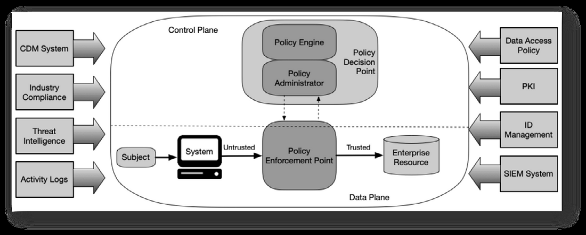
Zero Trust Architecture
Zero Trust Logical Components
Policy Decision Point (PDP) - The gatekeeper and is made up of the policy engine and
policy administrator.
Policy Engine (PE) - is responsible for granting access to a resource
Policy Administrator (PA) - generates any session-specific authentication token or
credential used to access an enterprise resource.
Policy Enforcement Point (PEP) - is responsible for enabling, monitoring and terminating
connections between a subject and an enterprise resource.
Zero Trust Disadvantages
Can be complex and expensive
Slows down application performance
Hampers employee productivity
56
6.6 Embedded Systems
This Is A Complete System Designed To Perform A Specific Dedicated Function.
These Systems Can Be A Microcontroller In A Small Device Or Could Be As Large And Complex As The Network Of Control Devices Managing A Water Treatment Plant.
Embedded Systems Are Characterized As Static Environments While A Pc Is A Dynamic Environment Because Both Software And Hardware Changes Can Be Made By The User.
Embedded Systems Are Usually Constrained By:
Processor Capability Power (Battery)
System Memory Authentication Technologies
Persistent Storage Cryptographic Identification
Cost Network And Range Constraints
Raspberry Pi And Arduino Are Examples Of Soc Boards Initially Devised As Educational Tools But Now Widely Used For Industrial Applications And Hacking.
Field Programmable Gate Array (Fpga) - As Many Embedded Systems Perform Simple And Repetitive Operations, It Is More Efficient To Design The Hardware Controller To Perform Only The Instructions Needed.
An Example Of This Is The Application-Specific Integrated Circuits (Asics) Used In Ethernet Switches But They Can Be Quite Expensive And Work Only For A Single Application.
An Fpga Solves The Problem Because The Structure Is Not Fully Set At The Time Of Manufacture Giving The End Customer The Ability To Configure The Programming Logic Of The Device To Run A Specific Application.
Operational Technology (Ot) Networks - These Are Cabled Networks For Industrial Applications And Typically Use Either Serial Data Protocols Or Industrial Ethernet.
Industrial Ethernet Is Optimized For Real-Time And Deterministic Transfers.
Cellular Networks - A Cellular Network Enables Long-Distance Communication Over The Same System That Supports Mobile And Smartphones.
Also Known As Baseband Radio And There Are Two Main Radio Technologies:
Narrowband-Iot (Nb-Iot) -This Refers To Low-Power Version Of The Long Term Evolution
(Lte) Or 4g Cellular Standard.
Lte Machine Type Communication (Lte-M) -This Is Another Low-Power System But
Supports Higher Bandwidth (Up To About 1 Mbps)
Any Lte-Based Cellular Radio Uses A Subscriber Identity Module (Sim) Card As An Identifier. The Sim Is Issued By A Cellular Provider With Roaming To Allow The Use Of Other Supplier’s Tower Relays.
57
6.7 Industrial Control Systems & Internet Of Things
Industrial Systems Have Different Priorities To It Systems And Tend To Prioritize Availability And Integrity Over Confidentiality (Reversing The Cia Triad As The Aic Triad)
Workflow And Process Automation Systems - Industrial Control Systems (Icss) Provide Mechanisms For Workflow And Process Automation And These Systems Control Machinery Used In Critical Infrastructure Like Power And Water Suppliers And Health Services.
An Ics Comprises Plant Devices And Equipment With Embedded PLCs.
Supervisory Control And Data Acquisition (SCADA) - A SCADA System Takes The Place Of A Server In Large Scale Multiple-Site Icss. Scada Typically Run As Software On Ordinary Computers, Gathering Data From And Managing Plant Devices And Equipment With Embedded Plcs Referred To As Field Devices.
Ics/Scada Applications - These Types Of Systems Are Used Within Many Sectors Of Industry
Power Generation And Distribution
Mining And Refining Raw Materials
Fabrication And Manufacturing
Logistics
Site And Building Management Systems
Internet Of Things (IoT) - This Is Used To Describe A Global Network Of Appliances And Personal Devices That Have Been Equipped With Sensors, Software And Network Connectivity.
58
SECTION 7 -
EXPLAIN RESILIENCY AND
SITE SECURITY CONCEPTS
7.1 Backup Strategies & Storage
Backups & Retention Policies - As Backups Take Up Space, There Is The Need For Storage Management Routines While Also Giving Adequate Coverage Of The Required Window.
The Recovery Window Is Determined By The Recovery Point Objective (Rpo) Which Is Determined Through Business Continuity Planning.
Backup Types
Full includes all files and directories while incremental and differential check the status of
the archive attribute before including a file. The archive attribute is set whenever the file
is modified so the backup software knows which files have been changed and need to
be copied.
Incremental makes a backup of all new files as well as files modified since the last
backup while differential makes a backup of all new and modified files since the last full
backup. Incremental backups save backup time but can be more time-consuming when
the system must be restored. The system is restored first from the last full backup set and
then from each incremental backup that has subsequently occurred.
Snapshots And Images - Snapshots Are Used For Open Files That Are Being Used All The Time Because Copy-Based Mechanisms Are Not Able To Backup Open Files.
In Windows, Snapshots Are Provided For On Ntfs By The Volume Shadow Copy Service (Vss).
Backup Storage Issues - Backups Require Cia As Well And Must Be Secured At All Times. Natural Disasters Such As Fires And Earthquakes Must Also Be Accounted For.
Distance Consideration Is A Calculation Of How Far Offsite Backups Need To Be Kept Given Different Disaster Scenarios However They Mustn’t Be Too Far To Slow Down A Recovery Operation.
The 3-2-1 Rule States That You Should Have 4 Copies Of Your Data Across Two Media Types With One Copy Held Offline And Offsite.
59
Backup Media Types
Disk
Network attached storage (nas) - An appliance that is a specially configured type of
server that makes raid storage available over common network protocols
Tape - Very cost effective and can be transported offsite but slow compared to disk-
based solutions especially for restore operations
San & cloud
Restoration order - If a site suffers an uncontrolled outage, ideally processing should be switched to an alternate site. However, if an alternate processing site is not available, then the main site must be brought back online as quickly as possible to minimize service disruption.
A complex facility such as a data center or campus network must be reconstituted according to a carefully designed order of restoration.
Enable and test power delivery systems (grid power, ups, secondary generators and so
on)
Enable and test switch infrastructure then routing appliances and systems
Enable and test network security appliances (firewalls, ids)
Enable and test critical network servers (dhcp. dns, ntp and directory services)
Enable and test back-end and middleware (databases). verify data integrity
Enable and test front-end applications
Enable client workstations and devices and client browser access.
Non-persistence
Snapshot/revert to known state - A saved system state that can be reapplied to the
instance.
Rollback to known configuration
Live boot media - An instance that boots from read-only storage to memory rather than
being installed on a local read/write hard disk.
When provisioning a new or replacement instance automatically, the automation system may use one of two types of mastering instructions.
Master image - the “gold copy” of a server instance with the os applications and patches
all installed and configured.
Automated build from a template -similar to a master image and is the build instructions
for an instance. rather than storing a master image, the software may build and provision
an instance according to the template instructions.
60
7.2 Implementing Redundancy Strategies
High Availability - A Key Property Of Any Resilient System And Is Typically Measured Over A Period Of One Year.
The Maximum Tolerable Downtime (Mtd) Metric Expresses The Availability Requirement For A Particular Business Function.
High Availability Also Means That A System Is Able To Cope With Rapid Growth In Demand.
Scalability Is The Capacity To Increase Resources To Meet Demands With Similar Cost Ratios
To Scale Out Is To Add More Resources In Parallel With Existing Resources
To Scale Up Is To Increase The Power Of Existing Resources.
Elasticity Refers To The System’s Ability To Handle These Changes On Demand In Real Time.
Fault Tolerance & Redundancy - A System That Can Experience Failures And Continue To Provide The Same Or Nearly The Same Level Of Service Is Said To Be Fault Tolerant.
Fault Tolerance Is Often Achieved By Provisioning Redundancy For Critical Components And Single Points Of Failure.
Power Redundancy
Dual Power Supplies Battery Backups And Upss
Managed Power Distribution Units (Pdus) Generators
A Ups Is Always Required To Protect Load Balancers - Nic Teaming Provides Against Any Interruption As A Backup Load Balancing At The Adapter Level, Load
Generator Cannot Be Brought Online Fast Balancing And Clustering Can Also Be Enough To Respond To A Power Failure. Provisioned At A Service Level.
Network Redundancy -Network Interface A Load Balancing Switch Distributes Card (Nic) Teaming Means The Server Workloads Between Available Servers.
Connected To Separate Network Cabling. Multiple Redundant Servers To Share Data And Session Information To For Example Four 1gb Ports Gives An Maintain A Consistent Service If There Is Overall Bandwidth Of 4gb So If One Port With Multiple Ports Or Both. Each Port Is A Load Balancing Cluster Enables Is Installed With Multiple Nics Or Nics
Failover From One Server To Another.
Goes Down, 3gb Of Bandwidth Will Still Be
Provided. Disk Redundancy - Redundant Array Of
Independent Disks (Raid) - Here Many Disks
Switching & Routing - Network Cabling Can Act As Backups For Each Other To Should Be Designed To Allow For Multiple Increase Reliability And Fault Tolerance. Paths Between The Various Switches And
Routers So That During A Failure Of One There Are Several Raid Levels Numbered 0
Part Of The Network, The Rest Remains To 6 Operational.
61
RAID Level Fault Tolerance
Mirroring means that data is written to two disks simultaneously, providing
Level 1 redundancy (if one disk fails, there is a copy of data on the other). The main
drawback is that storage efficiency is only 50%.
Striping with parity means that data is written across three or more disks, but additional information (parity) is calculated. This allows the volume to
Level 5
continue if one disk is lost. This solution has better storage efficiency than RAID 1.
Double parity, or level 5 with an additional parity stripe, allows the volume
Level 6
to continue when two devices have been lost.
Nesting RAID sets generally improves performance or redundancy.For
Nested (0+1, 1+0, or 5+0) example, some nested RAID solutions can support the failure ofmore than
one disk.
Geographical Redundancy & Replication - Data Replication Can Be Applied In Many Contexts:
Storage Area Networks - Redundancy Can Be Provided Within The San And Replication
Can Also Take Place Between Sans Using Wan Links.
Database
Virtual Machine - The Same Vm Instance Can Be Deployed In Multiple Locations. This
Can Be Achieved By Replicating The Vm’s Disk Image And Configuration Settings.
Geographical Dispersal Refers To Data Replicating Hot And Warm Sites That Are Physically Distant From One Another. This Means That Data Is Protected Against A Natural Disaster Wiping Out Storage At One Of The Sites.
Asynchronous & Synchronous Replication
Synchronous Replication Is Designed To Write Data To All Replicas Simultaneously
Therefore All Replicas Should Always Have The Same Data All The Time.
Asynchronous Replication Writes Data To The Primary Storage First And Then Copies
Data To The Replicas Scheduled Intervals. It Isn’t A Good Choice For A Solution That
Requires Data In Multiple Locations To Be Consistent
62
7.3 Cyber Security Resilient Strategies
Configuration management - in the network directory. Configuration management ensures that
each component of ict infrastructure is in a Change control & change management -
A change control process can be used to
trusted state that has not diverged from its
request and approve changes in a planned
documented properties.
and controlled way. change requests are
Change control and change management usually generated when
reduce the risk that changes to these Something needs to be corrected components could cause service
disruption. When something changes
Asset management - An asset Where there is room for improvement in management process tracks all the a process or system currently in place.
organization’s critical systems, components, In a formal change management process, devices and other objects of value in an the need or reasons for change and the inventory. procedure for implementing the change An asset management database can be is captured in a request for change (rfc) configured to store as much or as little document and submitted for approval.
information as it deemed necessary though The implementation of changes should typical data would be type, model, serial be carefully planned, with consideration number, asset id, location, user(s), value for how the change will affect dependent and service information. components.
Asset identification & standard naming For major changes, a trial change should conventions - Tangible assets can be be attempted first and every change should identified using a barcode label or be accompanied by a rollback plan so the frequency id (rfid) tag attached to the change can be reversed if it has a negative device. the rfid tag is a chip programmed impact. with asset data and can help to also track the location of the device making theft Site resiliency - An alternate processing more difficult. site might always be available and in use
A standard naming convention for set up or only be used in an emergency. while a recovery site might take longer to hardware and digital assets such as
accounts and virtual machines makes the A hot site can failover almost environment more consistent. This means immediately.
errors are easier to spot and it’s easier to A warm site could be similar but with automate through scripting. the requirement that the latest data set The naming strategy should allow admins will need to be loaded.
to identify the type and function of any A cold site takes longer to set up and particular resource or location at any point could be an empty building waiting to
63
have whatever equipment that is needed to be installed in it.
Diversity and defense in depth - layered security is typically seen as improving cybersecurity resiliency because it provides defense in depth (multiple security controls).
Allied with defense in depth is the concept of security through diversity. Technology diversity refers to a mix of oss, applications, coding languages and so on while control diversity means that the layers of controls should combine different classes of technical and administrative controls with the range of control functions to prevent, detect, correct and deter.
Vendor diversity - As well as deploying multiple types of controls, there are also advantages in leveraging vendor diversity.
While single vendor solutions provide interoperability and can reduce training and support costs, it does have several disadvantages.
Not obtaining best-in-class performance
Less complex attack surface.
Less innovation
Deception and disruption strategies
Active defense means an engagement with the adversary and can mean the deployment of decoy assets to act as lures or bait.
A honey pot is a system set up to attract threat actors, with the intention of analyzing attack strategies and tools to provide early warnings of attack attempts. it could also be used to detect internal fraud, snooping and malpractice.
A honeynet is an entire decoy network.
On a production network, a honeypot is more likely to be located in a dmz, or on an isolated segment on the private network if the honeypot is seeking to draw out insider threats.
A honeypot or honeynet can be combined with the concept of a honeyfile which is convincingly useful but actually fake data.
Some examples of disruption strategies include:
Using bogus dns entries to list multiple non-existent hosts
Configuring a web server with multiple decoy directories
Using port triggering or spoofing to return fake telemetry data when a host detects port
scanning activity. This will result in multiple ports being falsely reported as open.
Using a dns sinkhole to route suspect traffic to a different network such as a honeynet.
64
7.4 - Physical Security Controls
Physical access controls - These are between zones. The flow should be security measures that restrict and monitor “in and out” rather than “across and access to specific physical areas or assets. between”
They can control access to buildings, Give high traffic public areas high server rooms, data centers, finance or legal visibility areas and so on.
Physical access controls depend on the facing toward pathways or windows. In secure zones, do not display screens
same access control fundamentals as Alternatively use one-way glass so that network or os security: no one can look in through windows.
Authentication - Create lists of in order to secure a Gateways and locks - approved people gateway, it must be fitted with a lock. Lock Authorization - Create barriers around types can be categorized as follows:
a resource so access to it is controlled Physical - A conventional lock that through defined entry and exit points prevents the door handle from being Accounting - Keep a record of when operated without the use of a key.
entry/exit points are used and detect Electronic - Rather than a key, the lock security breaches. is operated by entering a pin on an Site layout, fencing & lighting - electronic keypad. This type of lock is Given constraints of cost and existing also referred to as cipher, combination infrastructure, try to plan the site using the or keyless. following principles
Biometric - A lock may be integrated
Locate secure zones with biometric scanner
Use a demilitarized zone design for Physical attacks against smart cards and
the physical space and position public usb - smart cards used to bypass electronic
access areas so that guests do not pass locks can be vulnerable to cloning and
near secure zones. skimming attacks.
Use signage and warnings to enforce Card cloning - Making one or more
the idea that security is tightly copies of an existing card. A lost or
controlled. stolen card with no cryptographic
protections can be physically Entry points to secure zones should duplicated. be discreet. Do not allow an intruder
the opportunity to inspect security Skimming - Refers to using a
mechanisms. counterfeit card to capture card details
which are then used to program a Try to minimize traffic having to pass duplicate.
65
Malicious usb charging cables and plugs are also a widespread problem. A usb data blocker can provide mitigation against “juice-jacking” attacks by preventing any sort of data transfer when the smartphone is connected to a charge point.
Alarm systems & sensors
there are five main types of alarms
Circuit - A circuit-based alarm sounds when the circuit is opened or closed depending on
the type of alarm. Could be caused by a door or window opening or by a fence being cut.
Motion detection - A motion-based alarm is linked to a detector triggered by any
movement within an area.
Noise detection - An alarm triggered by sounds picked up by a microphone.
Proximity - Rfid tags and readers can be used to track the movement of tagged objects
within an area.
Duress - This type of alarm is triggered manually by staff if they come under threat.
Security guards & cameras - Surveillance is typically a second layer of security designed to improve the resilience of perimeter gateways.
Security guards can be placed in front of secure and important zones and can act as a very effective intrusion detection and deterrence mechanism but can be expensive.
Cctv is a cheaper means of providing surveillance than using security guards.
The other big advantage is that movement and access can also be recorded but the main drawback is that response times are longer and security may be compromised if not enough staff are present to monitor the camera feeds.
Reception personnel & id badges - A very important aspect of surveillance is the challenge policy and can be quite effective against social engineering attacks.
An access list can be held at the reception area for each secure area to determine who is allowed to enter.
Reception areas for high-security zones might be staffed by at least two people at all times
7.5 - physical host security controls
Secure Areas - A secure area is designed to store critical assets with a higher level of access protection than general office areas. The most vulnerable point of the network infrastructure will be the communications or server room.
Air gap/ dmz - An air gapped host is one that is not physically connected to any network. Such a host would normally have stringent physical access controls.
An air gap within a secure area serves the same function as a dmz. As well as being disconnected from any network, the physical space around the host makes it easier to detect unauthorized attempts to approach the asset.
66
Protected Distribution & Faraday Cages - A physically secure cabled network is referred to as protected cable distribution or as a protected distribution system (pds). There are two main risks:
An attacker could eavesdrop using a tap
An attacker could cut the cable (dos)
Heating, Ventilation & Air Conditioning - Environmental controls mitigate the loss of availability through mechanical issues with equipment such as overheating.
For computer rooms and data centers, the environment is typically kept at a temperature of about 20-22 degrees centigrade and relative humidity of 50%.
Hot and Cold Aisles - A server room or data center should be designed in such a way as to maximize air flow across the server or racks.
The servers are placed back-to-back not front-to-back so that the warm exhaust from one bank of servers is not forming the air intake for another bank. This is referred to as a hot/cold aisle arrangement.
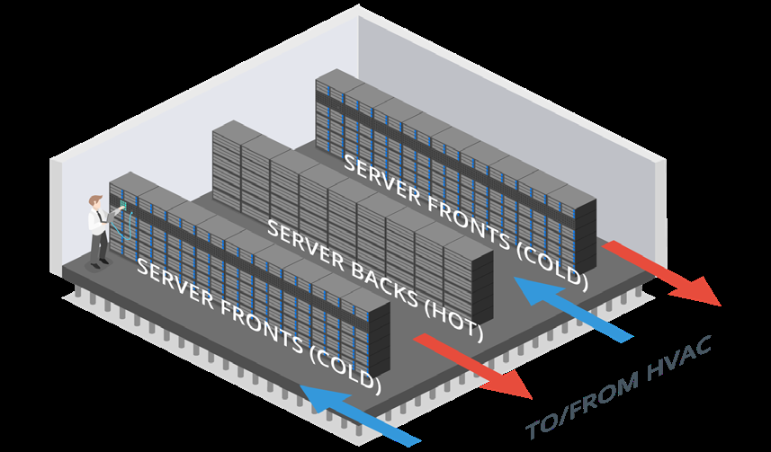
Fire detection & suppression - Fire suppression systems work on the basis of the fire triangle. This triangle works on the principle that a fire requires heat, oxygen and fuel to ignite and burn so removing any one of them will suppress the fire.
Overhead sprinklers may also be installed but there is the risk of a burst pipe and accidental triggering as well as the damage it could cause in the event of an actual fire.
Secure data destruction - Physical security controls also need to take account of the disposal phase of the data life cycle. Media sanitization and remnant removal refer to erasing data from hard drives, flash drives and tape media before they are disposed of.
67
There are several physical destruction options:
Burning
Shredding and pulping
Pulverization
Degaussing - Exposing a hard disk to a powerful electromagnet disrupts the magnetic
pattern that stores the data.
Data Sanitization Tools - The standard method of sanitizing an hdd is called overwriting. This can be performed using the driver’s firmware tools or a utility program.
The most basic type of overwriting is called zero filling which just sets each bit to zero. Single pass zero filling can leave patterns that can be read with specialist tools.
Secure Erase (SE) - Since 2001, the sata and serial attached scsi (sas) specifications have included a secure erase (se) command. This command can be invoked using a drive/array utility or the hdparm linux utility. On hdds, this performs a single pass of zero-filling.
Instant Secure Erase (ISE) - Hdds and ssds that are self-encrypting drives (seds) support another option invoking a sanitize command set in sata and sas standards from 2012 to perform a crypto ease. Drive vendors implement this as ise. With an ise, all data on the drive is encrypted using media encryption key (mek) and when the erase command is issued, the mek is erased rendering the data unrecoverable.
68
SECTION 8
EXPLAIN VULNERABILITY
MANAGEMENT
8.1 Vulnerability Discover
A zero-day vulnerability refers to a vulnerability that is actively being exploited by attackers before the vendor has had an opportunity to develop and release a patch or fix for it.
A bug bounty program is an incentive program that compensates participants for discovering and ethically reporting the bugs or vulnerabilities. The program could be Open or Closed.
Ethical Disclosure - This is the practice
of publishing information related
to a vulnerability or finding in order
to inform users so they can make
informed decisions.
Full Disclosure - Making all details
public without regard to additional
harm that may be caused to
others including exploitation by
adversaries.
Responsible Disclosure - Making enough information known so that informed decisions
can be made while not releasing sensitive details that could be useful to an adversary.
CVE Program - This is an international community driven effort to catalog hardware and software vulnerabilities for public access.
The CVSS is an open framework for communicating the characteristics and severity of hardware and software vulnerabilities.
There are five ratings - None, low, medium, high and critical.
The National Vulnerability Database (NVD) provides CVSS scores for almost all known vulnerabilities.
69
8.2 Weak host & Network configurations
Using the default manufacturer settings is an example of weak configuration. The root account or the default admin account typically has no restrictions set over system access and can have an extremely serious impact if an attacker gains control of it.
Open Permissions - This refers to provisioning data files or applications without differentiating access rights for user groups. This can lead to permitting unauthenticated guests to view confidential data or allowing write access to read only files. servers must operate with at least some open ports but security best practice dictates that these should be restricted to only necessary services.
Weak encryption - this can arise from the following:
the key is generated from a simple password making it easy to brute-force
the algorithm or cipher used for the encryption has known weaknesses
the key is not distributed securely and can easily fall into the attacker’s hands.
Errors - weakly configured applications may display unformatted error messages under
certain conditions and can provide threat actors with valuable information.
8.3 Evaluation Scope
Evaluation target or scope refers to the product, system, or service being analyzed for potential security vulnerabilities.
The target is the focus of a specific evaluation process, where it is subjected to rigorous testing and analysis to identify any possible weaknesses or vulnerabilities in its design, implementation, or operation
For application vulnerabilities, the target would refer to a specific software application.
The primary goal of the evaluation is to mitigate risk, improve the application’s security posture, and ensure compliance with relevant security standards or regulations.
70
Conducting vulnerability assessments and penetration testing to identify
Security Testing
potential weaknesses, vulnerabilities or misconfigurations
Reviewing documentation such as design specifications, architecture
Documentation Review
diagrams, security policies and procedures
Analyzing source code to identify potential security vulnerabilities or
Secure Code Analysis coding errors to uncover issues related to input validation and coding